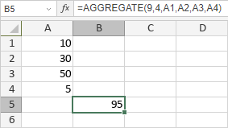
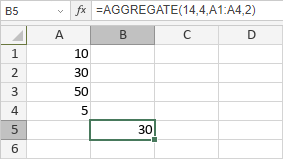

AGGREGATE funkcija
Funkcija AGGREGATE je jedna od matematičkih i trigonometrijskih funkcija. Ova funkcija se koristi za vraćanje agregirane vrednosti u listi ili bazi podataka. Funkcija AGGREGATE može primeniti različite agregatne funkcije na listu ili bazu podataka uz opciju ignorisanja skrivenih redova i vrednosti sa greškama.
Sintaksa
AGGREGATE(function_num, options, ref1, [ref2], ...)
Funkcija AGGREGATE ima sledeće argumente:
| Argument | Opis |
|---|---|
| function_num | Numerička vrednost koja određuje koju funkciju treba koristiti. Moguće vrednosti su navedene u tabeli ispod. |
| options | Numerička vrednost koja određuje koje vrednosti treba ignorisati. Moguće vrednosti su navedene u tabeli ispod. |
| ref1 | Prva numerička vrednost za koju želite da dobijete agregiranu vrednost. |
| ref2 | Do 253 numeričke vrednosti ili referenca na opseg ćelija koji sadrži vrednosti za koje želite agregiranu vrednost. Ovo je opcioni argument. |
Argument function_num može imati jednu od sledećih vrednosti:
| function_num | Funkcija |
|---|---|
| 1 | AVERAGE |
| 2 | COUNT |
| 3 | COUNTA |
| 4 | MAX |
| 5 | MIN |
| 6 | PRODUCT |
| 7 | STDEV.S |
| 8 | STDEV.P |
| 9 | SUM |
| 10 | VAR.S |
| 11 | VAR.P |
| 12 | MEDIAN |
| 13 | MODE.SNGL |
| 14 | LARGE |
| 15 | SMALL |
| 16 | PERCENTILE.INC |
| 17 | QUARTILE.INC |
| 18 | PERCENTILE.EXC |
| 19 | QUARTILE.EXC |
Argument options može imati jednu od sledećih vrednosti:
| Numerička vrednost | Ponašanje |
|---|---|
| 0 ili izostavljeno | Ignoriše ugnježdene SUBTOTAL i AGGREGATE funkcije |
| 1 | Ignoriše skrivene redove, ugnježdene SUBTOTAL i AGGREGATE funkcije |
| 2 | Ignoriše vrednosti sa greškama, ugnježdene SUBTOTAL i AGGREGATE funkcije |
| 3 | Ignoriše skrivene redove, vrednosti sa greškama, ugnježdene SUBTOTAL i AGGREGATE funkcije |
| 4 | Ne ignoriše ništa |
| 5 | Ignoriše skrivene redove |
| 6 | Ignoriše vrednosti sa greškama |
| 7 | Ignoriše skrivene redove i vrednosti sa greškama |
Napomene
Ako želite da koristite neku od sledećih funkcija: LARGE, SMALL, PERCENTILE.INC, QUARTILE.INC, PERCENTILE.EXC ili QUARTILE.EXC, ref1 mora biti referenca na opseg ćelija, a ref2 mora biti drugi argument koji je neophodan za ove funkcije (k ili quart).
| Funkcija | Sintaksa |
|---|---|
| LARGE | LARGE(array, k) |
| SMALL | SMALL(array, k) |
| PERCENTILE.INC | PERCENTILE.INC(array, k) |
| QUARTILE.INC | QUARTILE.INC(array, quart) |
| PERCENTILE.EXC | PERCENTILE.EXC(array, k) |
| QUARTILE.EXC | QUARTILE.EXC(array, quart) |
Kako primeniti funkciju AGGREGATE.
Primeri
Slika ispod prikazuje rezultat koji vraća funkcija AGGREGATE kada je primenjena funkcija SUM.

Slika ispod prikazuje rezultat koji vraća funkcija AGGREGATE kada je primenjena funkcija LARGE, ref1 je referenca na opseg ćelija, a k je jednako 2. Funkcija vraća drugu najveću vrednost u ćelijama A1-A4.
